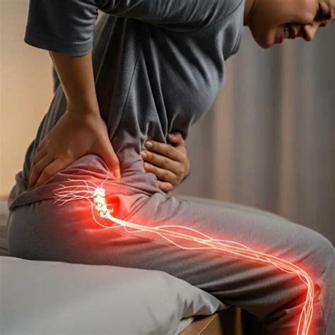

La radiculopathie lombaire (souvent appelée sciatique ou cruralgie) se caractérise par une douleur vive, une sensation de décharge électrique, de brûlure ou de fourmillements qui descend dans la fesse, la cuisse, le mollet ou le pied. L'objectif du bilan est d'évaluer la sensibilité de la racine nerveuse et de réduire l'irradiation.

En quoi consiste le bilan neurologique en kinésithérapie ?
Lors de votre première consultation au cabinet à Epagny Metz-Tessy, le bilan ne se limite pas à localiser la zone douloureuse. Un examen neurologique structuré et indolore est réalisé pour évaluer le niveau d'irritation et la santé de la racine nerveuse concernée (L4, L5 ou S1) :
- La force musculaire (test moteur) : nous évaluons si le signal nerveux passe correctement jusqu'aux muscles de la jambe et du pied (par exemple la capacité à se relever sur les pointes de pieds ou à relever le grand orteil).
- L'analyse du toucher (test sensitif) : à l'aide de stimulations douces sur la peau, nous vérifions si vous percevez le toucher de façon identique à droite et à gauche, ou si des zones engourdies / hypoesthésiques sont présentes.
- Les réflexes ostéotendineux (ROT) : l'utilisation d'un marteau à réflexes (au niveau du genou ou du tendon d'Achille) permet de contrôler la réactivité de l'arc réflexe spinal.
- La mécanosensibilité nerveuse (tests neurodynamiques) : au travers de tests doux de mise en tension progressive du nerf (comme le test de Lasègue ou le Slump test), nous mesurons la tolérance du nerf au glissement et au mouvement.
Ce bilan clinique initial permet d'établir une ligne de base objective et de s'assurer de l'absence de signe de gravité neurologique nécessitant un avis médical urgent.
Qu'est-ce que le phénomène de centralisation ?
Lors de l'examen mécanique (méthode MDT / McKenzie), la réalisation de mouvements répétés du dos peut modifier le trajet de la douleur. Lorsque la douleur remonte de la jambe ou de la fesse vers la ligne médiane du bas du dos, on parle de centralisation (Werneke & Hart, 2001).
La centralisation est un facteur de très bon pronostic : elle indique la direction de mouvement à privilégier au quotidien pour décompresser et soulager la racine nerveuse.
Evolution et patience
La décompression ou la baisse de l'inflammation d'un nerf prend du temps. La rééducation s'adapte à votre rythme et à l'évolution de vos symptômes. Si un déficit moteur sévère apparaît ou si les douleurs restent hyperalgiques sans réponse aux exercices, une réorientation médicale rapide vers votre médecin généraliste ou un spécialiste est organisée.
Sciatique et Hernie Discale : quel lien ?
Si la sciatique est souvent causée par un conflit entre une hernie discale et une racine nerveuse, l'imagerie ne fait pas tout. Pour comprendre pourquoi une hernie discale visible à l'IRM peut être asymptomatique ou se résorber spontanément, lisez notre article : Mon IRM montre une hernie discale : faut-il s'inquiéter ?.
Questions fréquentes
Mon nerf sciatique est-il "coincé" définitivement ?
Non. Le nerf n'est pas bloqué de manière irréversible. Il est le plus souvent irrité par une réaction inflammatoire locale ou une pression mécanique transitoire qui diminue avec le temps et le mouvement adapté.
Faut-il opérer une sciatique ?
La chirurgie est réservée aux urgences neurologiques (syndrome de la queue de cheval, déficit moteur sévère et progressif) ou aux échecs répétés du traitement médical et kinésithérapeute bien conduit pendant plusieurs mois.
Références scientifiques & Littérature
- Werneke M, Hart DL. Centralization phenomenon as a prognostic indicator for acute low back pain. Spine, 2001; 26(7):758-765.
- May S, Aina A. Centralization and directional preference: an updated systematic review. Manual Therapy, 2012; 17(6):497-506.
- Peul WC, van Houwelingen HC, van den Hout WB, et al. Surgery versus prolonged conservative treatment for sciatica. New England Journal of Medicine, 2007; 356(22):2245-2256.